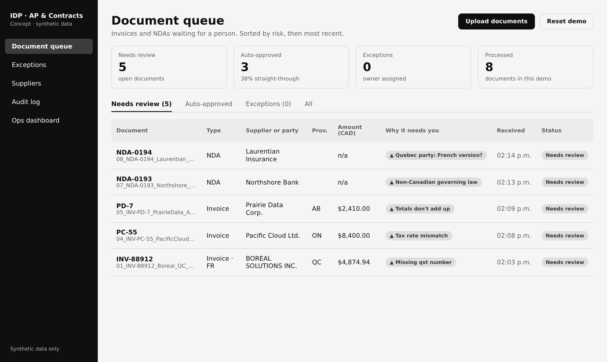
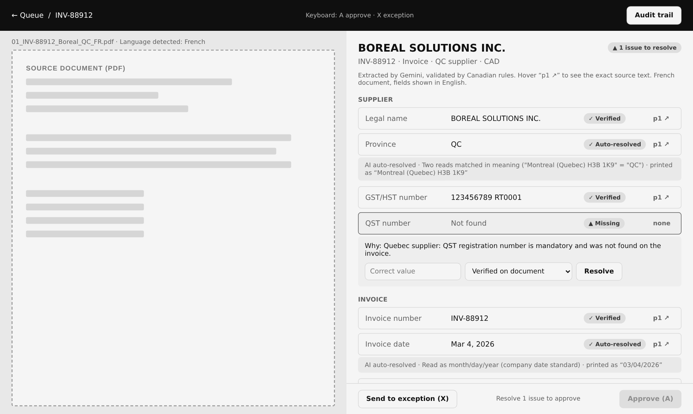
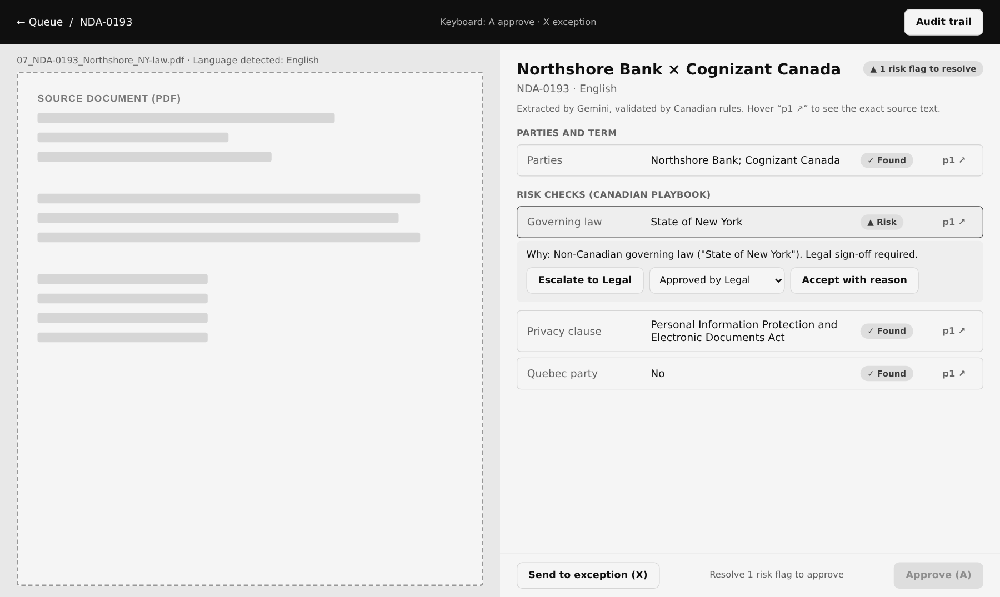
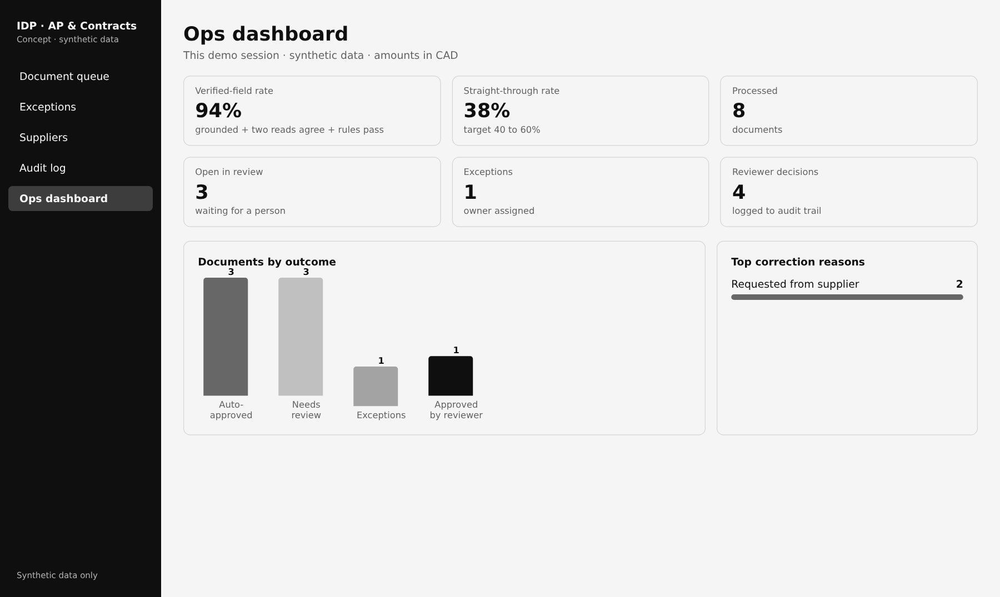

AI product case study
Intelligent document processing for Canadian AP & Contracts
An AI reviewer that reads invoices and NDAs, applies Canadian tax and legal rules, and sends people only what needs judgment.

AI product case study
An AI reviewer that reads invoices and NDAs, applies Canadian tax and legal rules, and sends people only what needs judgment.
02 · Problem
15+ fields rekeyed by hand (baseline to validate)
GST, HST, QST and PST, set by place of supply
French formats and provincial governing law
How might we let AI handle the routine reading, so people only make the judgment calls?
03 · Users
Clears the daily invoice queue fast and correctly
Triages NDAs and catches risky clauses
Needs a clean close and full tax-credit recovery
Key insight
The value isn't faster typing. It's a reviewer who only sees documents that need a decision, with the evidence in front of them.
From personas, journey maps and an OOUX model
04 · Solution
01
Every value is outlined where the AI read it.
02
"Quebec" = "QC"; dates shown as Mar 4, 2026.
03
Blocked until every real issue is resolved.
05 · How it works

All checks pass; 5% spot-audited
A person resolves real issues
AI unavailable; one-click retry
Every AI and human action
06 · Design

Queue · sorted by risk, reason in plain words

Invoice review · source left, evidence right

NDA review · same pattern, legal playbook

Ops dashboard · KPIs against targets
Live demo
Process a sample document, open it, resolve the issue and approve it. This is the real interface and rules engine, running in your browser.
AI responses for the 8 samples are recorded, because a public site can't hold an API key. Your own uploads go to Manual, which shows the failure path. The full version runs on n8n with live AI calls.
07 · AI approach
The model quotes the exact text it read. No quote, no value.
A second, independent read must agree, compared by meaning.
Deterministic Canadian rules decide validity. The model only reads.
08 · Validation
acceptance scenarios passed on the test pack: 3 auto-approved, 5 to review for a real reason
| What testing found | What changed |
|---|---|
| Two reads differed only in format | Compare by meaning; auto-resolve and explain |
| AI outages made documents vanish | Route to Manual with retry; block approval |
| Page refresh overwrote new results | Read-only views; only actions write |
| Low-value questions slowed reviewers | Business rules decide what needs a person |
09 · Business case
| Straight-through rate | 40–60% |
| Field-level accuracy | ≥ 95% |
| Handle time per document | −30% |
| Silent error rate | < 1% |
| Docs / month | Net / year | Payback |
|---|---|---|
| 2,000 | $69K | 37 mo |
| 10,000 | $358K | 5 mo |
| 50,000 | $1.83M | 1 mo |
AI ≈ 2¢ per document. Build ≈ $132K to a pilot. Assumptions and pricing
10 · Next
Usability sessions with AP reviewers; confirm baselines
Accuracy at scale by language and scan quality
Microsoft stack at 10,000+ documents a month